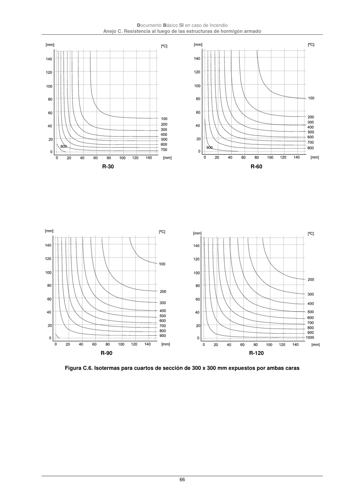
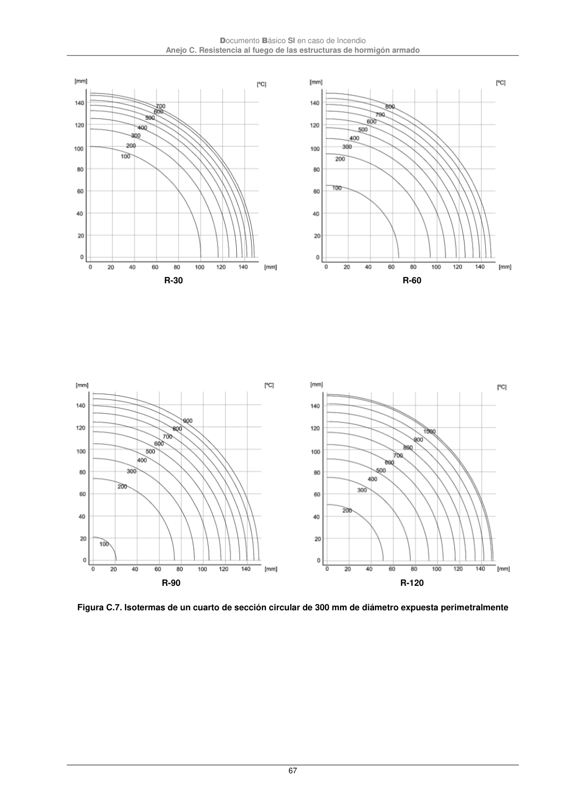
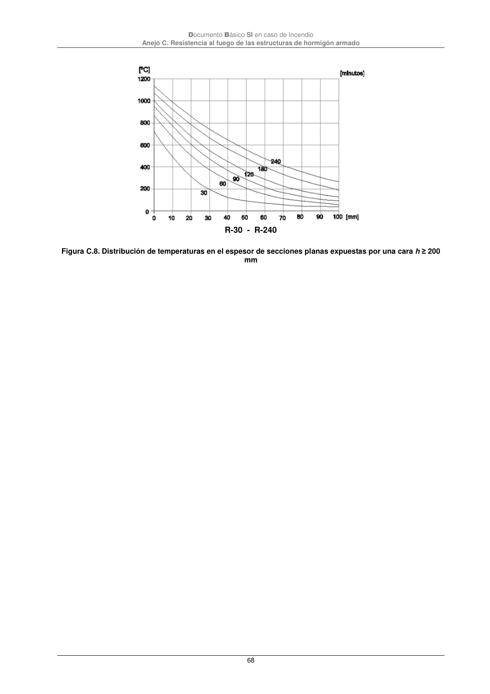

DB-SI · R-30 R-60 · versión 2025-03-04 · capa oficial
Formatos: JSON compacto · Markdown · PDF fuente
Ámbito del documento · texto del ámbito · documento y tablas
ID técnico a0179 · PDF pág. 66-68 · jerarquía no validada por persona · contrastado con el literal de la página 66 (candidato tipográfico); no validado por persona · padre: raíz
R-30 R-60 R-60 R-90 R-120 R-120 Figura C.6. Isotermas para cuartos de sección de 300 x 300 mm expuestos por ambas caras Documento Básico SI en caso de Incendio Anejo C. Resistencia al fuego de las estructuras de hormigón armado 67 R-30 R-60 R-90 R-120 Figura C.7. Isotermas de un cuarto de sección circular de 300 mm de diámetro expuesta perimetralmente Documento Básico SI en caso de Incendio Anejo C. Resistencia al fuego de las estructuras de hormigón armado 68 R-30 - R-240 Figura C.8. Distribución de temperaturas en el espesor de secciones planas expuestas por una cara h ≥ 200 mm



PDF fuente redistribuible: copia fiel enlazada en esta página (SHA256 verificado).